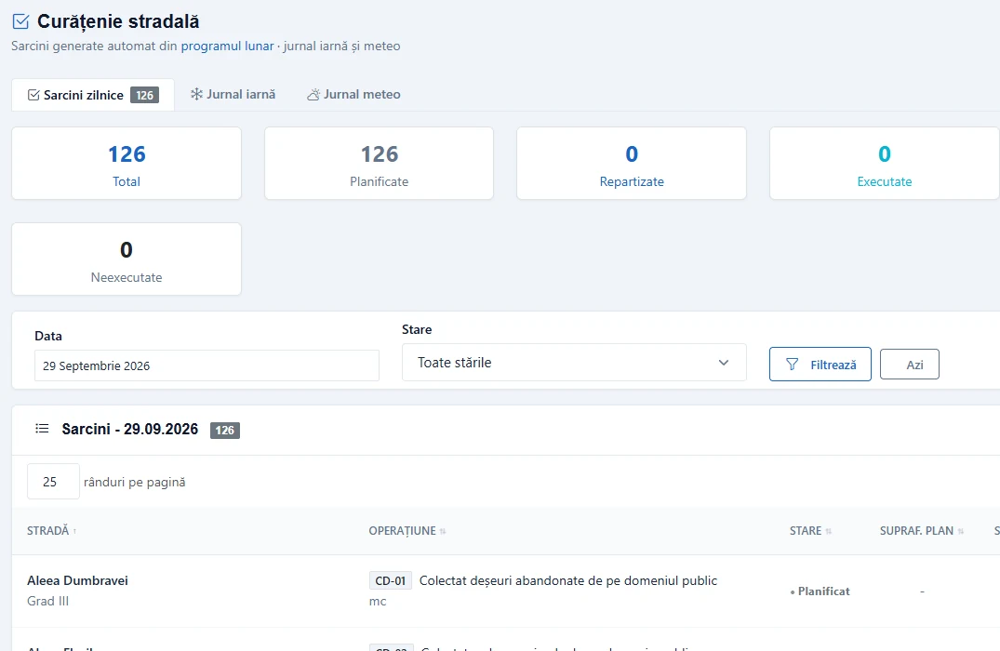
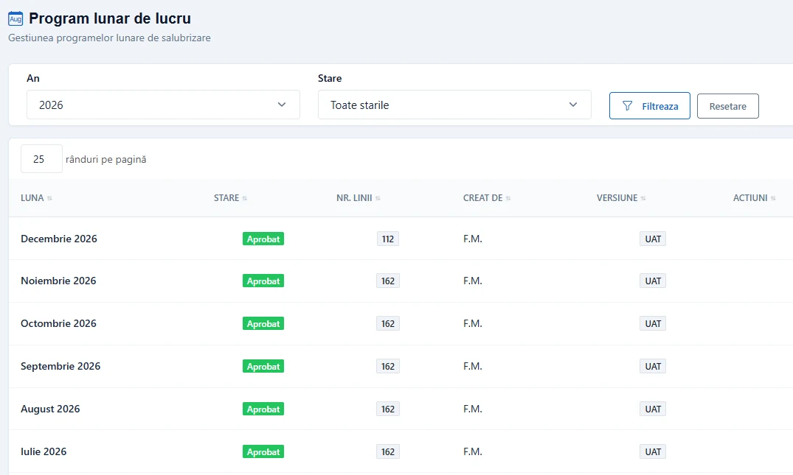
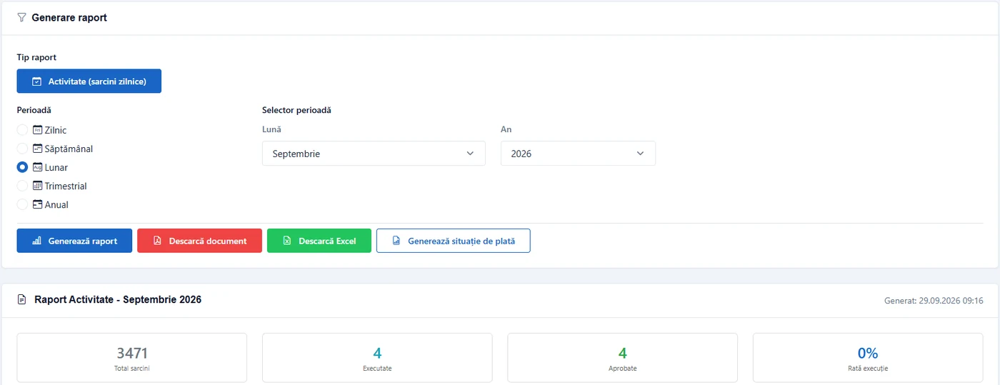
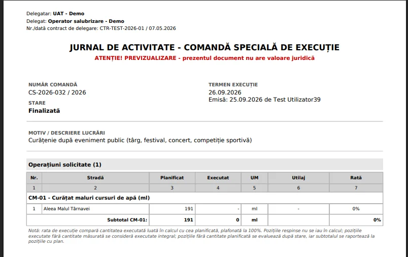

Autoritatea contractantă, ANRSC, Curtea de Conturi și ANPM cer documente diferite. SALUX le produce din aceleași date raportate de echipele din teren.
Datele de teren alimentează automat programul lunar, rapoartele și situațiile de plată.
Aplicația mobilă SALUX este accesibilă pe orice telefon Android sau iOS prin browser, fără instalare. Interfața conține elementele strict necesare - start schimb, marcaj activitate, captură foto, încheiere schimb. Funcționează fără conexiune și sincronizează automat la revenirea semnalului.

Execuția raportată din teren se adaugă automat. La orice moment din lună, operatorul vede ce s-a executat, ce urmează și ce abateri există față de planul aprobat. Modificările se aprobă ierarhic, cu trasabilitate completă.

La sfârșit de lună, raportul către autoritatea contractantă este deja construit. Situația de plată include automat toate prestațiile efectuate, fiecare cu probele aferente - coordonate, fotografii, marcaje temporale. Exportat în formatul prevăzut de Ordinul ANRSC 98/2025.

Raportul anual ANRSC, raportul ANPM și pachetul de probe pentru auditul Curții de Conturi se generează din aceleași date primare. Arhiva rămâne accesibilă minim 5 ani, fără perioade de pregătire dedicate.

Fiecare funcționalitate SALUX răspunde unei obligații concrete prevăzute de lege.
| Activitate | Sistem tradițional | Cu SALUX |
|---|---|---|
| Pregătire raport lunar | 2-3 zile lucrătoare | Generare automată, în maximum un minut |
| Justificare prestație contestată | Recuperare retrospectivă | Probă disponibilă instantaneu |
| Pregătire audit ANRSC / Curtea de Conturi | 1-2 săptămâni dedicate | Dosarul există deja |
| Răspuns la sesizare cetățean | Verificare telefonică, întârzieri | Fotografie cu localizare în câteva minute |
| Raport anual ANRSC | Compilație manuală | Export pre-formatat |
| Raport ANPM | Reconstituire din evidențe paralele | Export automat din date primare |
| Coordonare operator-UAT | Schimburi de email și telefonie | Acces partajat la aceeași sursă |
SALUX nu garantează absența controalelor sau a sancțiunilor. Asigură că, pentru fiecare prestație înregistrată, operatorul deține proba imediat accesibilă.
Import inventar (coșuri, străzi, contracte), configurare conturi și roluri, instruire echipe administrative. Sistemul devine operațional la finalul acestei faze.
Activarea pilot cu o echipă de teren restrânsă pe o rută sau un sector, pentru calibrarea fluxurilor și validarea formatelor de raportare specifice contractului.
Extindere la întreaga operațiune. Migrare date istorice relevante în paralel cu activitatea curentă. Asistență la prima situație de plată generată complet din sistem.
SALUX se achiziționează pe bază de licență anuală, fără costuri de implementare. Oferta se stabilește după numărul de contracte și de echipe din teren. Configurarea, importul datelor și instruirea echipelor sunt incluse.
Contactați echipa SALUX pentru o ofertă adaptată dimensiunii contractului dumneavoastră.
Pregătim demonstrația pe un caz real din operațiunea dumneavoastră: un sector, o lună, un raport. Vedeți concret fluxul de la teren până la situația de plată.